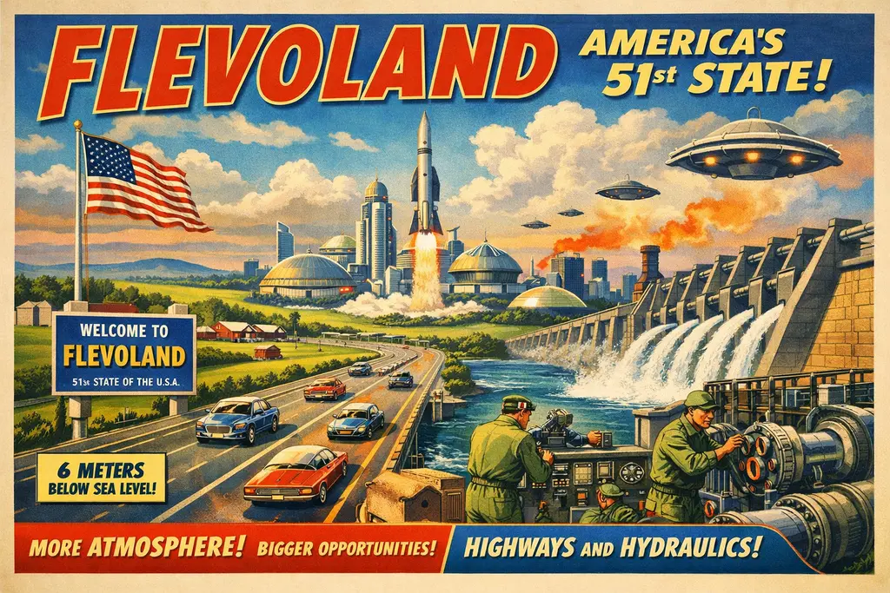

Flevoland Ceded to US in Global 'Greenland Compromise' as President Celebrates 'Beautiful New Island'

DUTCH PRIME MINISTER LABOURS TO CONCEAL ABSOLUTE JUBILATION OVER RETAINING THE WADDENEILANDEN IN LAND-SWAP ACCORD.
By Amthonie Vandenberg, European Geopolitical Correspondent
THE HAGUE — In an extraordinary diplomatic maneuver aimed at pacifying American territorial ambitions, the Dutch government has formally signed over the entire province of Flevoland to the United States of America.
The transaction is the first of many under the newly ratified "Greenland Compromise." The treaty was drafted after the US President, Laddon Prumt, renewed his aggressive bidirectional bid to purchase Greenland. Following a unified blockade from European leaders refusing to sell the world's largest island, a frantic compromise was brokered: every European nation must instead surrender one of their own domestic islands to satisfy the American real estate appetite.
According to leaked diplomatic cables, the Netherlands originally offered the pristine, ecologically protected Waddeneilanden (Frisian Islands) to the Americans. However, President Prumt reportedly rejected the offer during a heated telephone exchange, dismissing the UNESCO World Heritage site as "low-energy sandbanks with too many birds" and demanding "something firmer, ideally with a Lelystad Airport."
Enter Flevoland—the world’s largest artificial island, drained entirely from the Zuiderzee by Dutch engineers in the 20th century.
"It is a regrettable, though hardly unexpected day for the Kingdom," the Dutch Prime Minister announced to a somber press room, while visibly biting the inside of his cheek to stop himself from smiling. "we mourn the regrettable departure of Almere, but geopolitics requires sacrifice."
Sources close to the Prime Minister report that as soon as the American delegation left the room, senior cabinet members quietly opened a modest bottle of champagne, thrilled to have successfully tricked the US administration into taking a giant, flat expanse of reclaimed polder while keeping the beloved Waddeneilanden firmly in Dutch hands.
President Prumt, speaking from a newly constructed golf course blueprint superimposed over Urk, praised his own negotiating prowess.
"The Dutch tried to give us some weak islands. Very wet. No infrastructure. I said no, give us the big one," Prumt told reporters. "Flevoland. Great name. A lot of people are saying it’s the best land. It’s six meters below sea level, which means we get more atmosphere than anyone else. Tremendous leverage."
Under the terms of the cession, Flevoland will immediately be integrated as the 51st US State, with local traffic laws expected to be replaced by six-lane highways by Tuesday. The Dutch government has politely declined to mention that the dikes require continuous, highly complex maintenance, leaving the US Army Corps of Engineers to figure out the pumps on their own.